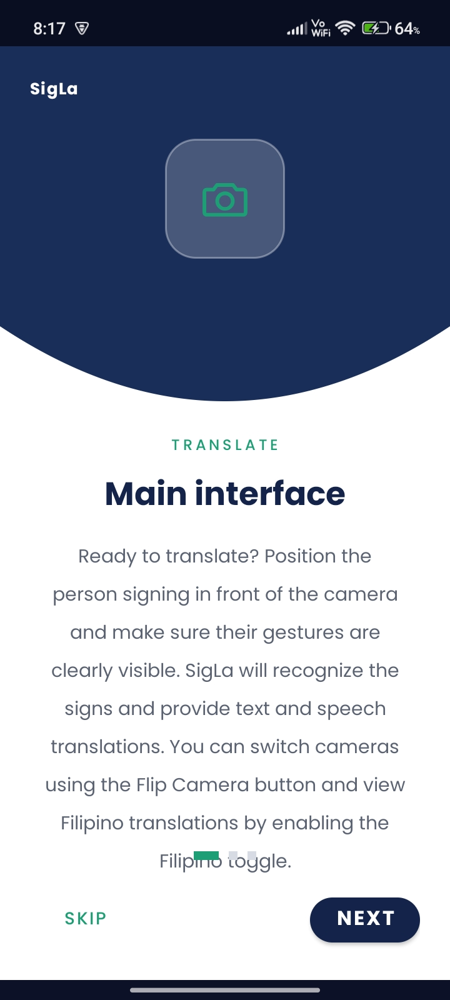
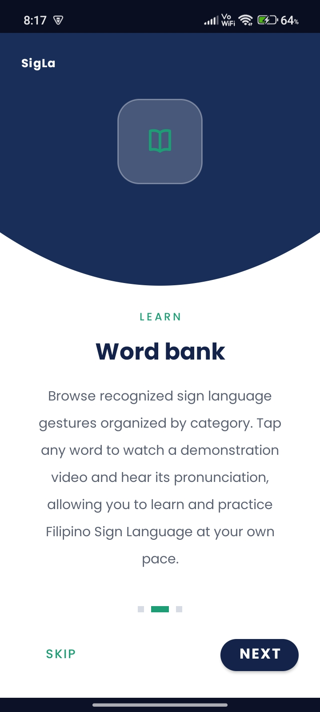

Two ways to bridge the gap
One camera, two directions: understand what someone signs to you, and learn how to sign back.
Live translation
Position the signer in front of the camera and SigLa recognizes their gestures as text and speech, as they sign. No recording, no waiting for a result.
Word Bank library
73 signs across Alphabet, Colors, Days, Family and more, each with a demo video at adjustable playback speed and its own pronunciation.
Filipino toggle
Switch a translation between English and Filipino mid-conversation, and flip between the front and back camera without losing your place.
Emergency SOS
Hold the SOS button on the translator screen for two seconds — there for the moment a conversation needs to turn into a call for help.
Runs on-device
Hand and pose detection happen locally on your phone's GPU, so translation keeps working even on a weak or absent connection.
Save demos offline
Download Word Bank videos ahead of time and practice signs with no data connection at all — useful in a classroom or a clinic.
Built around one camera screen
Taken straight from SigLa's own onboarding — what you'll see in your first minute.

Position & translate
Point the camera at the person signing and keep their gestures in frame. SigLa recognizes the signs and speaks the translation aloud.

Browse the Word Bank
Browse signs by category, tap any word to watch a demo video and hear it pronounced, and build vocabulary at your own pace.
Install in under a minute
SigLa isn't on the Play Store yet — it installs straight from the file below, the same way apps worked before app stores existed.
Download the APK
Tap the download button above on your Android phone, or open this page's link directly from the phone's browser.
Allow installs from this source
Android asks permission the first time. Tap Settings in that prompt, turn on Allow from this source, then go back.
Tap install, then open
SigLa asks for camera access on first launch — that's the only thing it needs to start translating. No sign-in required.
Try SigLa on your own phone
Free, works offline for the Word Bank, and takes about a minute to set up.
Download for Androidv1.0.0 · Android 7.0 (API 24) or newer · ~203 MB